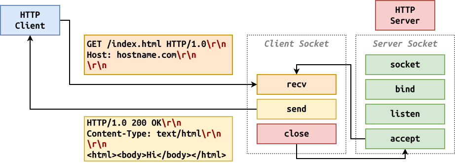

Logistics¶
- Homework 09: A web application that implements a REST interface using vial.py micro-framework.
Web Applications: Overview¶
A web application is a software system that uses the client / server model to provide dynamic and interactive services.

-
Client-side (Front-end): This is what you see and interact with (typically inside your web browser) and is built with HTML, CSS, and JavaScript.
-
Server-side (Back-end): This is what handles the data storage and processing user requests via HTTP and is built with languages like Python, PHP, or Node.js.
Web Applications: HTTP Server¶

To implement the HTTP back-end of a web application in Python, we can use the builtin HTTPServer.
from http.server import HTTPServer, SimpleHTTPRequestHandler
# Create a HTTP server that listens on port 9999 of every IP address
server = HTTPServer(('0.0.0.0', 9999), SimpleHTTPRequestHandler)
server.serve_forever()
Every time a HTTP client is accepted by the
server, a SimpleHTTPRequestHandler object is
created to process that connection.
Web Applications: Concurrency¶
HTTPServer handles one HTTP connection at a time. To add concurrency we can either use ThreadingHTTPServer in
place of HTTPServer or create our own ForkingHTTPServer by using multiple inheritance.
from socketserver import ForkingMixIn
# Create custom Forking HTTPServer by inheriting ForkingMixIn
class ForkingHTTPServer(ForkingMixIn, HTTPServer):
''' Multi-process HTTP server that forks a new process per request. '''
max_children = 8 # Limit the number of concurrent processes
# Create a Forking HTTP server that listens on port 9999 of every IP address
server = ForkingHTTPServer(('0.0.0.0', 9999), SimpleHTTPRequestHandler)
server.serve_forever()
Web Applications: Custom Handlers¶
The provided SimpleHTTPRequestHandler serves files from the current directory. If we wish to create our own handler, then we need to subclass BaseHTTPRequestHandler:
class HelloRequestHandler(BaseHTTPRequestHandler):
def do_GET(self): # Implement HTTP Method
self.send_response(200) # Send HTTP Status
self.send_header('Content-Type', 'text/plain') # Send HTTP Headers
self.end_headers()
self.wfile.write(f'Hello, World'.encode()) # Send HTTP Response
This HelloRequestHandler will be used to create a handler object for every incoming connection. If the
requested HTTP method is a GET then the do_GET method of this handler object will be called.
Web Applications: Query Data¶
As discussed previously, a HTTP request may have a query string which contains key/value pairs. To access this data, we can use the following utility methods from RealPython:
class HelloRequestHandler(BaseHTTPRequestHandler):
greeting: str='Unknown' # Class attribute
@cached_property
def url(self):
# Parse path into URL structure
return urlparse(self.path)
@cached_property
def query_data(self):
# Parse URL query into dictionary
return dict(parse_qsl(self.url.query))
def do_GET(self):
self.send_response(200)
self.send_header('Content-Type', 'text/plain')
self.end_headers()
# Lookup name in query dictionary
name = self.query_data.get('name', 'Unknown')
self.wfile.write(f'{self.greeting}, {name}'.encode())
Web Applications: Form Data¶
For a HTTP POST request, the user may upload a data payload. To access
this data, we can use the following utility methods from RealPython:
class HelloRequestHandler(BaseHTTPRequestHandler):
@cached_property
def post_data(self):
# Read Post data payload
content_length = int(self.headers.get('Content-Length', 0))
return self.rfile.read(content_length)
@cached_property
def form_data(self):
# Parse Post data payload
return dict(parse_qsl(self.post_data.decode('utf-8')))
def do_POST(self):
self.send_response(200)
self.send_header('Content-Type', 'text/plain')
self.end_headers()
# Lookup name in Post form data
HelloRequestHandler.greeting = self.form_data.get('greeting')
self.wfile.write(f'Greeting is {HelloRequestHandler.greeting}'.encode())
Web Applications: hello_app.py¶
Write a simple Hello, World web application that says hello to the user and let's the user specify the default name if none is specified.
# Start Hello Web Application
$ ./hello_app.py localhost 9999
# Get greeting
$ curl localhost:9999/?name=Domer
Hello, Domer
# Set default name
$ curl -d 'greeting=Hola' localhost:9999/
Greeting is Hola
Discuss:
-
Should add error handling.
-
What parts could we abstract away?
-
How would we support different paths?
#!/usr/bin/env python3
import sys
from functools import cached_property
from http.client import responses
from http.server import HTTPServer, BaseHTTPRequestHandler
from urllib.parse import parse_qsl, urlparse
# Classes
class HelloRequestHandler(BaseHTTPRequestHandler):
greeting: str='Hello'
# Helper Properties from RealPython
@cached_property
def url(self):
return urlparse(self.path)
@cached_property
def query_data(self):
return dict(parse_qsl(self.url.query))
@cached_property
def post_data(self):
content_length = int(self.headers.get('Content-Length', 0))
return self.rfile.read(content_length)
@cached_property
def form_data(self):
return dict(parse_qsl(self.post_data.decode('utf-8')))
# Handle Error
def error(self, status_code: int):
self.send_response(status_code)
self.send_header('Content-Type', 'text/plain')
self.end_headers()
self.wfile.write(responses[status_code].encode())
# Handle HTTP Methods
def do_GET(self):
if self.url.path != '/':
self.error(404)
return
self.send_response(200)
self.send_header('Content-Type', 'text/plain')
self.end_headers()
name = self.query_data.get('name', 'Unkown')
self.wfile.write(f'{self.greeting}, {name}'.encode())
def do_POST(self):
if not (greeting := self.form_data.get('greeting')):
self.send_response(400)
self.send_response(200)
self.send_header('Content-Type', 'text/plain')
self.end_headers()
HelloRequestHandler.greeting = greeting
self.wfile.write(f'Greeting is {HelloRequestHandler.greeting}'.encode())
# Main Execution
def main(arguments: list[str]=sys.argv[1:]):
try:
host = arguments[0]
port = int(arguments[1])
except IndexError:
print('Usage: hello_app.py host port', file=sys.stderr)
server = HTTPServer((host, port), HelloRequestHandler)
server.serve_forever()
if __name__ == '__main__':
main()